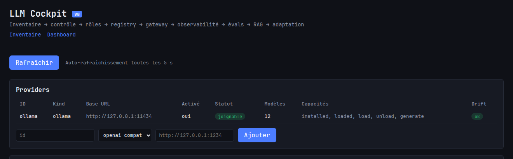
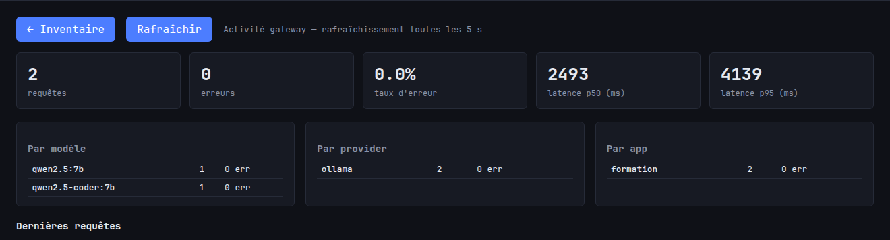
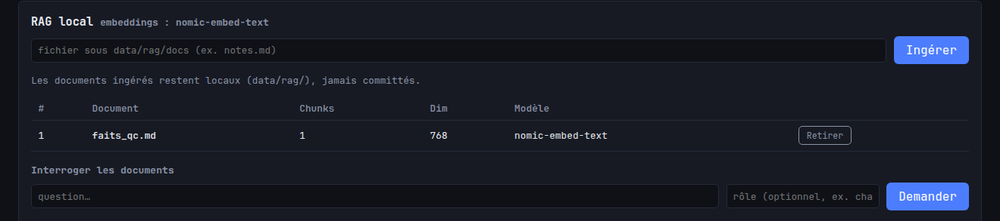
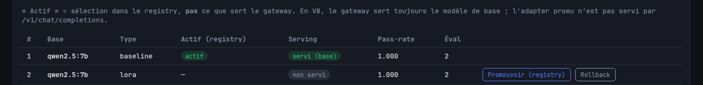

Jumeau formatif — LLM Cockpit V8
Clique les repères numérotés pour comprendre chaque zone du cockpit.
Statique
Formation
Offline
Basé sur les tests
V8

Header + providers réels

Stats et logs réels

RAG local réel

Promu ≠ servi
Données de démonstration pour formation, sans aucun appel backend.
Providers
Ollama
reachable
http://127.0.0.1:11434
Le provider sert à déclarer le moteur. Si Ollama est fermé, tout le cockpit reste vivant mais honnête.
Inventaire des modèles
| Modèle | Famille | Quant. | Taille | Digest | État |
| qwen2.5:7b | qwen2.5 | Q4_K_M | 4.7 GB | 9d3b4f… | loaded |
| qwen2.5-coder:7b | qwen2.5-coder | Q4_K_M | 4.9 GB | 3b7a11… | loaded |
| nomic-embed-text:latest | embedding | FP16 | 274 MB | a51f02… | not loaded |
| qwen2.5:14b-instruct-q6_K | qwen2.5 | Q6_K | 9.2 GB | f4c28e… | loaded |
La table montre des modèles installés, leur famille, quantization, taille, digest et état loaded / not loaded.
Rôles
| Rôle | Assignation |
|---|
| chat | qwen2.5:7b |
| code | qwen2.5-coder:7b |
| embedding | nomic-embed-text:latest |
| quality | qwen2.5:14b-instruct-q6_K |
| fast | qwen2.5:7b |
Le rôle pointe vers un modèle réel. `nomic-embed-text` ne sert pas au chat.
Gateway
| Rôle | Résolution | Statut |
|---|
| chat | ollama / qwen2.5:7b | routable |
| code | ollama / qwen2.5-coder:7b | routable |
| vision | — | non routable |
Le gateway résout un rôle vers un provider et un modèle. Il devient routable seulement si l’assignation existe.
LLM Cockpit V8
Observabilité, scores, RAG, adaptation et statut de serving.
Stats gateway
128total requests
3erreurs
2.3%taux d’erreur
184p50 ms
612p95 ms
Par modèle
qwen2.5:7b · 82 · 1 err
Par provider
ollama · 128 · 3 err
Par app
formation · 7 appels
Logs SQLite
| Horodatage | Rôle | Modèle | Statut | Latence |
|---|
| 2026-06-29 11:04:12 | chat | qwen2.5:7b | ok | 182 ms |
| 2026-06-29 11:05:01 | chat | qwen2.5:7b | ok | 194 ms |
| 2026-06-29 11:05:40 | code | qwen2.5-coder:7b | error | — |
Chaque appel gateway crée une ligne avec rôle, modèle, statut et latence.
Scoreboard
| Rôle | Modèle | Réussite | Checks | Cas |
|---|
| chat | qwen2.5:7b | 96% | 24/25 | 8 |
| code | qwen2.5-coder:7b | 91% | 22/24 | 8 |
Le scoreboard s’alimente d’évaluations lancées sur des suites locales.
RAG local
Ingestion d’un document .md, chunking, embeddings, puis requête avec sources.
| Doc | Chunks | Dim | Modèle |
|---|
| notes.md | 7 | 768 | nomic-embed-text:latest |
La requête doit répondre avec des sources; sans embeddings assignés, c’est une erreur fréquente.
Adaptation
Dry-run: orchestration contrôlée, pas de vrai fine-tuning.
| # | Base | Type | Registry | Serving |
|---|
| 12 | qwen2.5:7b | baseline | active | served_as_base |
| 18 | qwen2.5:7b | candidate | active | not_served |
Promouvoir dans le registry ne veut pas dire servir dans le gateway.